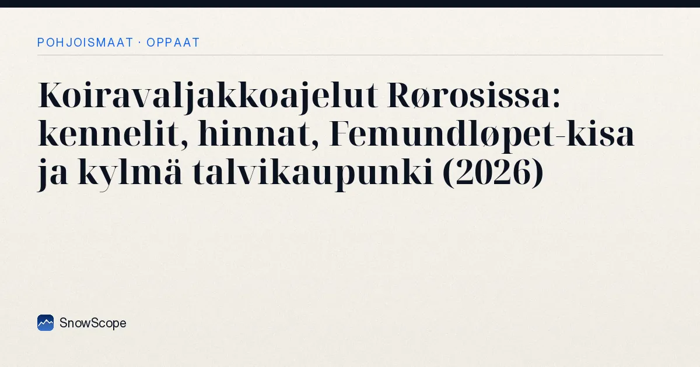

Koiravaljakkoajelut Rørosissa: kennelit, hinnat, Femundløpet-kisa ja kylmä talvikaupunki (2026)
Røros, vanha kuparipitäjä Ruotsin rajan lähellä, muuttuu koiravaljakon talvikeskukseksi kun pakkanen tulee. Laakson ilmasto on ankea ja kuiva. 13. marraskuuta säähavaintoasemalla 630 m korkeudella mitattiin 11 cm lunta—ei syvää, mutta riittävä tuntumaan talven alkaneeksi ja kauden ensimmäisten ajeluiden aloittamiseksi.
Katso kohteen Scandinavia lumiennuste reaaliajassa SnowScope-sovelluksessaLumensyvyys, puuterihälytykset ja 3D-kartta, ilmaiseksi.

Missä löytää valjakon ja koirat
Destination Røros -verkkosivuilla on listaus aktiivisista kenneleista kohteessa Røros ja sen ympäristössä. Kennel Dølanvollen, noin 10 minuutin päässä pohjoiseen, kertoo selvästi mitä se tarjoaa: 2 tunnin matka maksaa 2 500 NOK per henkilö, lyhyempi kierros 1 500 NOK ja lapset 1 000 NOK. Kun lunta on vähän tai maa paljaana, kennel siirtyy vaununajoon lumivaljakan sijaan. Se sulkeutuu, kun lämpömittari putoaa alle −20 °C, mikä tapahtuu säännöllisesti täällä.
Fjestad Husky operoi 40 Alaskan husky-koiraa Tufsingdalenissa ja sen perusti yksi Femundløpet-kilpailun järjestäjistä. Etelään päin Tynsetin lähellä Eywas Trails järjestää puolivuorokauden reissuja noin 2,5 tunnin mittaa. Kaikki kolme ottavat varauksia etukäteen, varsinkin talven syventyessä ja päivänvalon pienentyessä.
Femundløpet helmikuussa: pääksi
Pitkän matkan koiravaljakon kilpailu Femundløpet lähte ja päätyy Rørosissa. Pisin sarja F650 lähtee Kjerkgatalta (tämän Maailmanperintökohteen pääkadusta) 10. helmikuuta 2027. F450- ja juniorisarjat alkavat 11. helmikuuta ja F200 12. helmikuuta. Kadulla seisominen ja joukkueiden lähdön seuraaminen on paras tapa nähdä kerralla kymmeniä koiraa, kaikki varustauduttuja ja innokkaiksi.
Jos aiot tulla katsomaan, saavu ajoissa. Kaupunki täyttyy nopeasti kilpailupäivinä ja Kjerkgatan lähellä pysäköinti muuttuu vaikeaksi. Starttien katsominen on ilmaista ja ne vetävät puoleensa paikallisia ja vierailijoita.
Pakkanen, joka puree: mitä laakson ilmasto tarkoittaa
Røros sijaitsee 630 m korkeudella sisämaassa, merelle lähellä vaimentavasta vaikutuksesta poissa. Talven pakkanen täällä on terävä ja pysyvä. Korkealla laaksolla olevan kuivan ilman vuoksi pakkanen tuntuu syvemmältä kuin pelkkä lämpömittarin lukema ehdottaa. Marraskuun puolessa välistä 11 cm lunta on juuri pudonnut; muutamassa viikossa, jos sääkuvio pysyy kylmänä, syvyys kasvaa. Nyt kausi on nuori ja lumi vielä ohut.
Kennellit tuntevat tämän maiseман hyvin. Kennel Dølanvollen ei aja alle −20 °C:een koska silloin paleltumisen riski ja koirien stressi muuttuvat liian suuriksi. Laakso saavuttaa sen kylmyyden, joten jotkut talvikaudet saattavat pakottaa peruutuksia tai uudelleenaikataulutuksia. Tämä on normaalia Rørosissa tammikuussa ja helmikuussa.
Oman koiran kävely laaksolla
Jos tuot koiran Rørosiin, muista että poronlaumat käyttävät aluetta talvella ja ovat usein lähellä teitä ja polkuja. Norjalainen laki suojelee karjaa ja villieläimiä ympäri vuoden; koira on pidettävä hihnassa siellä missä porot saattavat laiduntaa. Pidä koirasi puolellasi kävellessä tai vaeltaessasi laaksolla.
Hiotulla hiihtopolulla siirry syrjään äläkä anna koiraasi juosta radassa itsessään. Jos koiraasi on lyhytkarvainen, tuo takki syvän pakkaseen. Laakson kuiva tuuli ja intensiivinen pakkanen voivat olla kovia koiran tassuille ja iholle.
Vierailusi ajoitus: lumi ja päivänvalo
Marraskuun alku on kynnys. 13. marraskuuta säähavaintoasemalla oli pudonnut ensimmäinen oikea lumi (11 cm), mutta kausi oli vielä nuori. Jos haluat varata valjakoajelumatkan, tammikuu ja helmikuu tarjoavat paremman lumensyvyyden ja kylmän, vakaan kauden. Hintana on lyhyempi päivänvalo: aurinko laskee aiemmin joka päivä talven syventyessä.
Pakkaa villakudokset yhden raskaaksi takiksi vaihtamisen sijaan. Kuiva pakkanen puree kovemmin kuin odotat. Peita kasvo, kädet ja jalat. Kysy kenneliltä kun varaat mitä välineitä tuoda; ne tuntevat laakson ja neuvovat sinua.
Vinkkejä laskijoille
- Varaa valjakoajelumatka etukäteen, varsinkin tammikuulle ja helmikuulle. Kysy kenneliltä mitä se tekee jos lämpötila putoaa alle −20 °C tai lumi katoaa: vaunuturit, uudelleenaikataulutukset tai sulkemiset.
- Femundløpetiin helmikuussa saavu Kjerkgatalle ajoissa kilpailupäivinä (10.–12. helmikuuta 2027). Katu ja pysäköinti täyttyvät nopeasti.
- Pukeudu villakudoksen kerroksiin ja peita paljaat ihmiset: laakson pakkanen on kuiva mutta intensiivinen, ja liikkuvan valjakon tuulenpoisto saa sen tuntumaan kovemmalta.
- Jos tuot koiran, pidä se hihnassa laaksolla ja sen ympärillä suojelemaan poronlaumoja. Kävele hiotun polun vieressä, et radassa itsessään. Tuo takki lyhytkarvaisen koiran käyttöön syvässä talvessa.
- Tarkista olosuhteet kenneleiltä ennen lähtöä. 11 cm lunta 13. marraskuuta on kauden alun lumi; jotkut matkat saattavat olla paljaan maan päällä vaununajona tai siirrettynä myöhemmille viikoille kun lunta on syvempää.
Näistä luvuista
Hiihtokeskusten lumensyvyydet ovat syvin lumi keskuksen ylärinteillä näytettynä päivänä; ne ovat arvioita alueelle, eivät mittaus yhdessä pisteessä. Ennusteet voivat muuttua. Lue aina virallinen lumivyöryennuste ennen rinteiden ulkopuolelle lähtöä.
Viittaa tähän raporttiin
Tutkimukseen, opetukseen tai mediaan: luvut ja kaaviot ovat vapaasti käytettävissä CC BY 4.0 -lisenssillä tällä lähdeviitteellä.
SnowScope (2026), Koiravaljakkoajelut Rørosissa: kennelit, hinnat, Femundløpet-kisa ja kylmä talvikaupunki (2026), https://snowscope.app/blog/fi/2026/11/roros-dog-sledding-femund-winter-guide-2026.html, luettu 2026-11-14
SnowScope (Atlas Labs). (2026, November 14). Koiravaljakkoajelut Rørosissa: kennelit, hinnat, Femundløpet-kisa ja kylmä talvikaupunki (2026). SnowScope snow reports. https://snowscope.app/blog/fi/2026/11/roros-dog-sledding-femund-winter-guide-2026.html
BibTeX
@misc{snowscope2026rorosdogsleddingfemundwi,
author = {{SnowScope (Atlas Labs)}},
title = {Koiravaljakkoajelut Rørosissa: kennelit, hinnat, Femundløpet-kisa ja kylmä talvikaupunki (2026)},
year = {2026},
month = nov,
howpublished = {\url{https://snowscope.app/blog/fi/2026/11/roros-dog-sledding-femund-winter-guide-2026.html}},
note = {Published 2026-11-15 09:34 UTC; accessed 2026-11-14}
}· CC BY 4.0 · Menetelmät, data ja työkalut →
Seuraa: Scandinavia
Ilmainen: viesti, kun uutta lunta on tulossa, ja ennuste joka aamu.